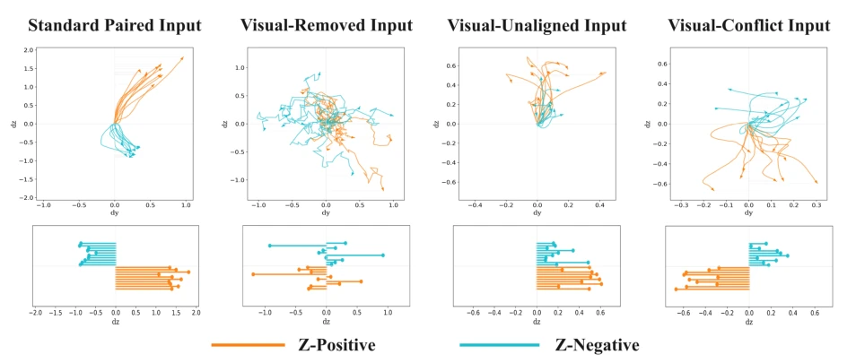
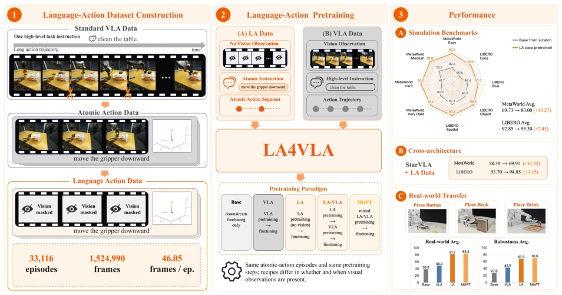
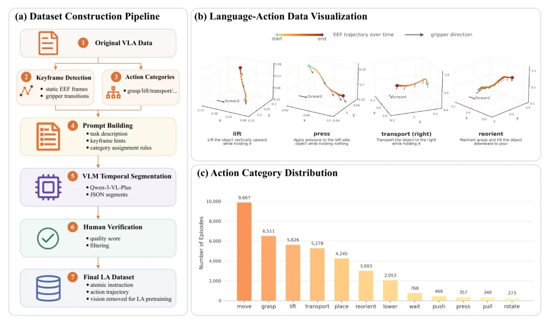
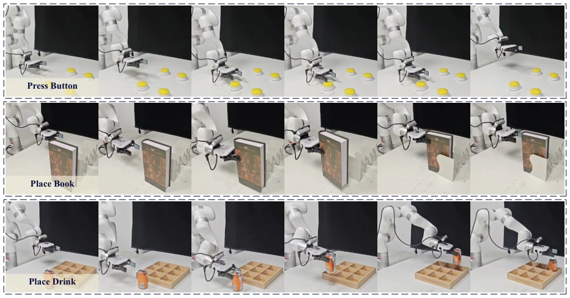
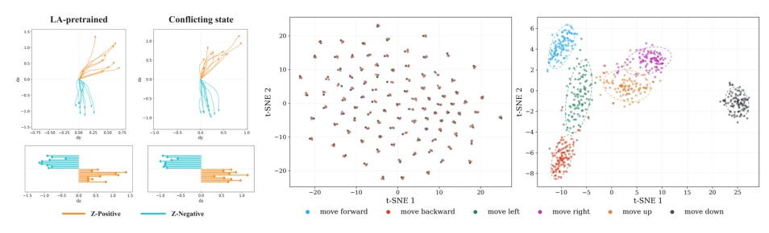
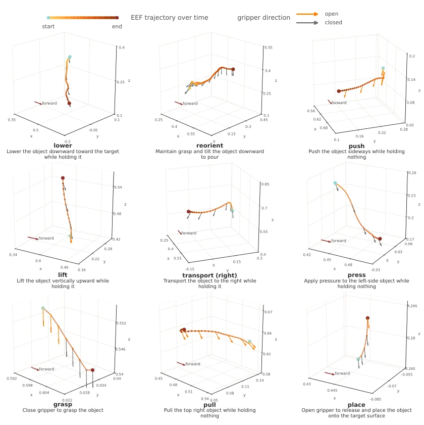

This paper attempts to "de-mystify" VLA models, pointing out that they are actually patients of "visual dependency syndrome". The authors are clever, directly implementing "blind training" (LA4VLA), enabling the model to learn language-to-action mapping without images. This approach indeed has merit, as visual signals are too dense while language signals are too sparse, making models prone to taking shortcuts. However, in real-world deployment, who dares to use it without eyes? Thus, this is more like an auxiliary means of "reinforced memory", rather than a replacement solution. Although the LA4-33K dataset does not require new data collection, relying on VLM segmentation plus manual review, which sounds cost-saving, but how is the quality of VLM-generated instructions? Manual review of 33K items, this labor cost is not low, is it? Moreover, the 1B parameter small model achieves 87% on MetaWorld and 96% on LIBERO, looking quite impressive, but the real-world task success rate is only 83%, still a gap compared to simulation. Overall, this is a good "niche" idea, proving that language priors are indeed useful, but do not expect it to completely break free from vision.
Existing VLA models [1-9] generally suffer from asymmetry between visual and language supervision. At the data level, one trajectory corresponds to hundreds or thousands of images, yet only one instruction, causing visual signals to dominate during training [10]. At the model level, the number of visual tokens far exceeds language tokens, making policies prone to relying on visual shortcuts rather than understanding language intent [14]. Through diagnostic experiments, the authors found that when visual input is removed or conflicting, standard VLA policies cannot correctly follow instructions, indicating weak language-action grounding. This leads to poor robustness of the model under visual changes (such as lighting, viewpoint). Therefore, a pre-training method capable of decoupling vision is needed, allowing the model to first learn to "act on instructions", then combine with vision, thereby reducing overfitting to visual cues in specific scenarios.

Figure 2 Qualitative visualization of instruction-conditioned direction following under different visual input configura- tions. The top row shows predicted trajectories projected onto the plane containing the tested motion axis, and the bottom row presents endpoint displacement projected onto that axis.
The core of the LA4VLA framework lies in constructing visual-free Language-Action (LA) data. First, utilizing existing demonstration data such as DROID [10], long trajectories are segmented into atomic action fragments through keyframe detection (e.g., grasp, place) and action vocabulary (e.g., lift, grasp). Next, Qwen-3-VL-Plus [38] is used as a proposal generator to generate visual-independent low-level instructions (e.g., "move left") for each fragment, and low-quality samples are filtered through manual verification, finally constructing the LA4-33K dataset. In the pre-training phase, the authors designed three paradigms: pure LA pre-training, LA followed by VLA pre-training (LA-VLA), and mixed pre-training (MixPT). The model LA4VLA-1B is based on InternVL3-1B [37], masking visual input during the LA stage, predicting actions using only language instructions and proprioceptive state; visual input is restored during the VLA stage. This design forces the model to learn the intrinsic association between language and action during the pre-training period, rather than visual association.

Figure 1 Overview of the LA4VLA framework. The left panel illustrates the construction of Language-Action data by reorganizing VLA demonstrations into atomic instruction-action segments. The middle panel summarizes the LA4VLA pretraining paradigm, which studies how LA supervision can be used alone or combined with standard VLA pretraining. The right panel presents representative performance across simulation, architectures, real-world transfer, and robustness evaluations.

Figure 3 Overview of the Language-Action dataset. The left panel summarizes the construction pipeline, which converts standard vision-language-action demonstrations into vision-agnostic atomic language-action episodes. The top-right panel visualizes representative Language-Action data examples using end-effector trajectories and gripper-direction arrows. The bottom-right panel reports the action-category distribution of the LA4-33K dataset.
Experiments cover MetaWorld [17], LIBERO [18], and real xArm6 robot tasks. Baselines include no pre-training, VLA pre-training, and LA pre-training. On MetaWorld, the MixPT paradigm average success rate increased to 87.53%, an improvement of 17.8 percentage points compared to no pre-training; on LIBERO, LA-VLA reached 96.28%. In real tasks, MixPT average success rate is 83.3%, an improvement of 45.0 percentage points compared to no pre-training. Robustness tests show that under Gaussian noise added to images, the LA pre-training strategy performs significantly better than VLA pre-training. Direction following diagnostics indicate that LA pre-trained models can still maintain instruction following under visual conflict, with clearer internal representation clustering. Ablation studies confirm that LA supervision not only improves performance but also enhances cross-architecture generalization (e.g., StarVLA [16]).

Figure 4 Real-world task execution on the xArm6 platform. Each row shows a representative rollout of one language- conditioned task, with frames ordered from left to right over the course of execution: Press Button (top), Place Book (middle), and Place Drink (bottom).

Figure 5 Direction-following behavior and representation analysis of the LA-pretrained policy. Left panel: qualitative direction-following under the LA-pretrained and Conflicting-state conditions for a representative pair of opposite commands along the z axis. The top row shows predicted trajectories in the dy–dz plane, and the bottom row shows endpoint projections along the tested z axis. Right panel: t-SNE visualization of the policy representations before action decoding, colored by direction command. The VLA-trained policy maps different commands to mixed clusters, whereas the LA-pretrained policy forms clearer command-aligned clusters.
其他图片Other Figures

Figure 6 The visualization of more action primitives